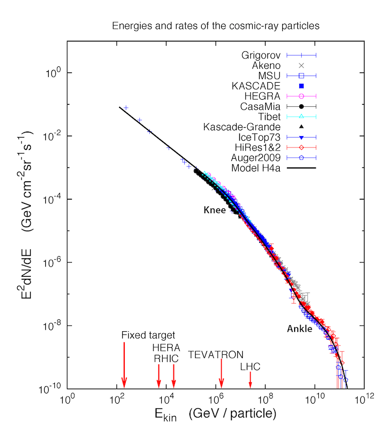
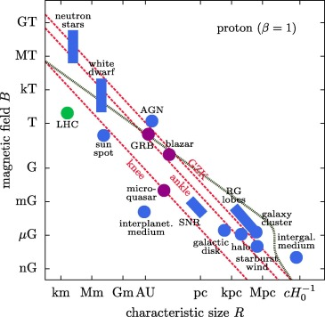

Home
Hello! My name is Emily Simon and I'm a graduate student at the University of Chicago studying Astrophysics!
Research
I am broadly interested in theoretical astroparticle physics with a special interest in high energy phenomenon and beyond the standard model physics!
My current research involves the search for PeV particles from supernova remnants with Professor Damiano Caprioli.


Past projects include:
How are particles accelerated when magnetic field lines break and reconnect?
Poster from Columbia University's AstroFest 2019
Can we use a delayed and non-pointing photon signature to look for Beyond the Standard Model physics in ATLAS?
CERN REU Final Talk
Can we take advantage of perturbations in strong gravitational lenses to characterize the dark matter distribution in subhaloes?
MNRAS paper
Outreach
I am a member of the Astronomy & Astrophysics Community Engagement Working Group. Learn more about what we're up to here!
Contact
Feel free to get in contact!
Send me an email
Check out my Orcid
View my CV
View my LinkedIn